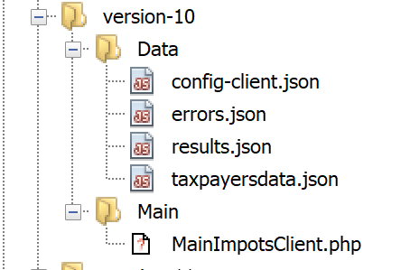
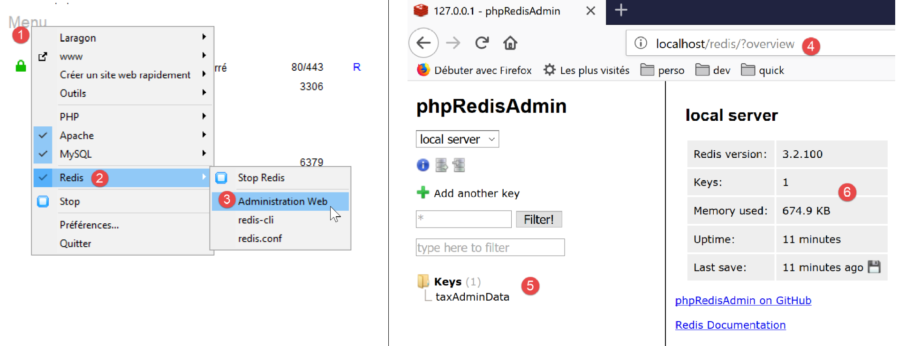

20. 应用程序练习 – 第 10 版
上一版本已说明，应将所有应用用户共用的税费数据存储在 [Application] 作用域的缓存中。我们将使用 Redis 服务器 [https://redis.io] 来实现这一点。
20.1. Redis
[Application] 作用域的内存将由 Redis 服务器实现。需要此应用程序内存的 PHP 脚本将成为该服务器的客户端：

20.2. 安装 Redis
Laragon 自带的 Redis 服务器默认处于禁用状态。因此，您必须首先将其启用：

- 在 [3] 中，启用 [Redis] 服务器；
- 在 [4] 中，将端口 [6379] 保留为 Redis 客户端使用的默认端口；
启用 Redis 后，Laragon 服务将自动重启：

20.3. 命令模式下的 Redis 客户端
可在命令模式下查询 Redis 服务器。打开 Laragon 终端（参见链接部分）：

- 在 [1] 中，[redis-cli] 命令将启动 Redis 服务器的命令行客户端；
截至2019年7月，Redis客户端支持172条用于与服务器交互的命令 [https://redis.io/commands#list]。其中一条命令 [command count] [2] 会显示该数字 [3]。
本文仅介绍我们PHP应用程序所需的命令。我们将 Redis 用于单一目的：在 Redis 内存中存储一个 [‘属性’=>’值’] 数组。这通过 Redis 命令 [set 属性 值] [4] 实现。随后可使用 [get 属性] 命令 [5] 检索该值。这就是我们所需的全部内容。
可能需要清空 Redis 的内存。这可以通过 [flushdb] 命令 [6] 实现。随后，如果查询 [title] 属性的值 [7]，我们会得到一个 [nil] 引用 [8]，表明未找到该属性。我们还可以使用 [exists] 命令 [9-10] 来检查属性是否存在。
要退出 Redis 客户端，请输入 [quit] 命令 [11]。
20.4. 为 PHP 安装 Redis 客户端
现在我们需要为 PHP 安装一个 Redis 客户端：

有多种库实现了 Redis 客户端。我们将使用 [Predis] 库 [https://github.com/nrk/predis]（2019 年 7 月）。与之前的库一样，该库可通过 [composer] 在 Laragon 终端中安装：

20.5. 服务器端代码

配置文件 [config-server.json] 修改如下：
{
"rootDirectory": "C:/myprograms/laragon-lite/www/php7/scripts-web/impots/version-10",
"databaseFilename": "Data/database.json",
"relativeDependencies": [
"/../version-08/Entities/BaseEntity.php",
"/../version-08/Entities/ExceptionImpots.php",
"/../version-08/Entities/TaxAdminData.php",
"/../version-08/Entities/Database.php",
"/../version-08/Dao/InterfaceServerDao.php",
"/../version-08/Dao/ServerDao.php",
"/../version-09/Dao/ServerDaoWithSession.php",
"/../version-08/Métier/InterfaceServerMetier.php",
"/../version-08/Métier/ServerMetier.php",
"/../version-09/Utilities/Logger.php",
"/../version-09/Utilities/SendAdminMail.php"
],
"absoluteDependencies": [
"C:/myprograms/laragon-lite/www/vendor/autoload.php",
"C:/myprograms/laragon-lite/www/vendor/predis/predis/autoload.php"
],
"users": [
{
"login": "admin",
"passwd": "admin"
}
],
"adminMail": {
"smtp-server": "localhost",
"smtp-port": "25",
"from": "guest@localhost",
"to": "guest@localhost",
"subject": "plantage du serveur de calcul d'impôts",
"tls": "FALSE",
"attachments": []
},
"logsFilename": "Data/logs.txt"
}
注释
- 第 5–15 行：第 10 版除了 [impots-server.php] 脚本外，并未引入任何新内容。它采用了第 08 版和第 09 版的元素；
- 第 19 行：这是我们刚刚安装的 [predis] 库所需的依赖项；
服务器代码 [impots-server.php] 的变更如下：
<?php
// strict adherence to declared types of function parameters
declare (strict_types=1);
// namespace
namespace Application;
// error handling by PHP
ini_set("display_errors", "0");
//
// configuration file path
define("CONFIG_FILENAME", "Data/config-server.json");
// class alias
use \Application\ServerDaoWithSession as ServerDaoWithRedis;
// session
$session = new Session();
$session->start();
…
…
// 1st log
$logger->write("\n---nouvelle requête\n");
// retrieve the current query
$request = Request::createFromGlobals();
// authentication only the 1st time
if (!$session->has("user")) {
…
} else {
// log
$logger->write("Authentification prise en session…\n");
}
// we have a valid user - we check the parameters received
$erreurs = [];
// you need three parameters GET
$method = strtolower($request->getMethod());
…
// mistakes?
if ($erreurs) {
// an error code 400 HTTP_BAD_REQUEST is sent to the customer
sendResponse($response, ["erreurs" => $erreurs], Response::HTTP_BAD_REQUEST, [], $logger);
// completed
exit;
} else {
// logs
$logger->write("paramètres ['marié'=>$marié, 'enfants'=>$enfants, 'salaire'=>$salaire] valides\n");
}
// we've got everything you need to work
// Redis
\Predis\Autoloader::register();
try {
// customer [predis]
$redis = new \Predis\Client();
// connect to the server to see if it's there
$redis->connect();
} catch (\Predis\Connection\ConnectionException $ex) {
// internal server error
doInternalServerError("[redis], " . utf8_encode($ex->getMessage()), $response, $config['adminMail'], $logger);
// completed
exit;
}
// creation of the [dao] layer
if (!$redis->get("taxAdminData")) {
// tax data is taken from the database
$logger->write("données fiscales prises en base de données\n");
try {
// construction of the [dao] layer
$dao = new ServerDaoWithRedis($config["databaseFilename"], NULL);
// put tax data in scope memory [application]
// method [TaxAdminData]->__toString will be called implicitly
$redis->set("taxAdminData", $dao->getTaxAdminData());
} catch (\RuntimeException $ex) {
// we note the error
doInternalServerError("[dao], " . utf8_encode($ex->getMessage()), $response, $config['adminMail'], $logger, $redis);
// completed
exit;
}
} else {
// tax data are taken from the [application] scope memory
$arrayOfAttributes = \json_decode($redis->get("taxAdminData"), true);
$taxAdminData = (new TaxAdminData())->setFromArrayOfAttributes($arrayOfAttributes);
// istanciation of the [dao] layer
$dao = new ServerDaoWithRedis(NULL, $taxAdminData);
// logs
$logger->write("données fiscales prises dans redis\n");
}
// creation of the [business] layer
$métier = new ServerMetier($dao);
// tAX CALCULATION
$result = $métier->calculerImpot($marié, (int) $enfants, (int) $salaire);
// we return the answer
sendResponse($response, $result, Response::HTTP_OK, [], $logger, $redis);
// end
exit;
function doInternalServerError(string $message, Response $response, array $infos,
Logger $logger = NULL, \Predis\Client $predisClient = NULL) {
// $message: error message
// $response : answer HTTP
// $infos: information table for sending mail
// $result: results table
// $logger: application logger
// $predisClient: a customer [predis]
//
// send an e-mail to the administrator
// SendAdminMail intercepts all exceptions and logs them itself
$infos['message'] = $message;
$sendAdminMail = new SendAdminMail($infos, $logger);
$sendAdminMail->send();
// an error code 500 is sent to the customer
sendResponse($response, ["erreur" => $message], Response::HTTP_INTERNAL_SERVER_ERROR, [], $logger, $predisClient);
}
// function to send HTTP response to client
function sendResponse(Response $response, array $result, int $statusCode,
array $headers, Logger $logger = NULL, \Predis\Client $predisClient = NULL) {
// $response : answer HTTP
// $result: results table
// $statusCode: HTTP response status
// $headers: HTTP headers to be included in the response
// $logger: application logger
// $predisClient: a customer [predis]
//
// status HTTTP
$response->setStatusCode($statusCode);
// body
$body = \json_encode(["réponse" => $result], JSON_UNESCAPED_UNICODE);
$response->setContent($body);
// headers
$response->headers->add($headers);
// shipping
$response->send();
// log
if ($logger != NULL) {
$logger->write("$body\n");
$logger->close();
}
// close connection [redis]
if ($predisClient != NULL) {
$predisClient->disconnect();
}
}
注释
- 第 15 行：我们将别名 [ServerDaoWithRedis] 赋予类 [\Application\ServerDaoWithSession]，以反映服务器脚本实现中的变更；
- 第 18–19 行：会话被维护。在此，我们需要牢记两点信息：
- 用户已成功认证。该信息具有 [session] 作用域：它与特定用户绑定，对其他用户无效；
- 税务管理数据。该信息具有 [application] 作用域：它不与特定用户相关联，而是适用于所有用户；
- 第 54–64 行：创建将与 [redis] 服务器通信的 [redis] 客户端。该客户端将通过服务器的默认端口进行通信。如果服务器未使用默认端口，或者未位于 [localhost] 机器上，则需要将此信息传递给 [\Predis\Client] 类的构造函数；
- 第 59 行：客户端立即连接到服务器以检查其是否响应；
- 第 60–65 行：若连接 Redis 服务器失败，则向客户端发送错误响应，并向应用程序管理员发送电子邮件；
- 第 67 行：向 [redis] 服务器查询键 [taxAdminData]。若未找到，则从数据库中检索税务数据（第 72 行）；
- 第 75 行：将键 [taxAdminData] 及其对应的 JSON 字符串（变量 [$taxAdminData]，其类型为 [TaxAdminData] 对象）存储在 [redis] 内存中。 [$redis→set] 方法期望键的值为字符串。因此，它将尝试将 [TaxAdminData] 对象转换为 [string] 类型。这会隐式调用 [TaxAdminData->__toString] 方法，该方法会生成 [TaxAdminData] 对象的 JSON 字符串；
- 第 84 行：键 [taxAdminData] 已存在于 [redis] 内存中，因此我们检索其值。我们知道这是 [TaxAdminData] 对象的 JSON 字符串。随后我们解析该字符串以获取一个属性数组；
- 第 85 行：基于该数组，实例化一个新的 [TaxAdminData] 对象；
- 第 87 行：实例化 [dao] 层；
20.6. 客户端代码

客户端版本 10 与版本 9 完全相同。唯一的改动在于配置文件 [config-client.json]：
{
"rootDirectory": "C:/Data/st-2019/dev/php7/poly/scripts-console/impots/version-10",
"taxPayersDataFileName": "Data/taxpayersdata.json",
"resultsFileName": "Data/results.json",
"errorsFileName": "Data/errors.json",
"dependencies": [
"/../version-08/Entities/BaseEntity.php",
"/../version-08/Entities/TaxPayerData.php",
"/../version-08/Entities/ExceptionImpots.php",
"/../version-08/Utilities/Utilitaires.php",
"/../version-08/Dao/InterfaceClientDao.php",
"/../version-08/Dao/TraitDao.php",
"/../version-09/Dao/ClientDao.php",
"/../version-08/Métier/InterfaceClientMetier.php",
"/../version-08/Métier/ClientMetier.php"
],
"absoluteDependencies": [
"C:/myprograms/laragon-lite/www/vendor/autoload.php"
],
"user": {
"login": "admin",
"passwd": "admin"
},
"urlServer": "https://localhost:443/php7/scripts-web/impots/version-10/impots-server.php"
}
唯一的改动是第24行的服务器URL。
结果与版本 09 相同。让我们测试一个新的错误情况：

控制台中的结果如下：
L'erreur suivante s'est produite : {"statut HTTP":500,"erreur":"[redis], Aucune connexion n’a pu être établie car l’ordinateur cible l’a expressément refusée. [tcp:\/\/127.0.0.1:6379]"}
Terminé
20.7. [Codeception] 客户端测试

版本 10 中的 [ClientMetierTest] 测试类与版本 09 中的完全相同，只有一个例外：
<?php
// strict adherence to declared types of function parameters
declare (strict_types=1);
// namespace
namespace Application;
// definition of constants
define("ROOT", "C:/Data/st-2019/dev/php7/poly/scripts-console/impots/version-10");
…
}
- 第 10 行：测试环境为 Redis 10 版本客户端；
在开始测试之前，让我们使用 [redis-cli] 客户端从 [redis] 服务器的内存中删除 [taxAdminData] 键：

现在，让我们运行测试：

现在让我们查看服务器日志 [logs.txt]：
05/07/19 08:52:16:396 :
---nouvelle requête
05/07/19 08:52:16:403 : Autentification en cours…
05/07/19 08:52:16:403 : Authentification réussie [admin, admin]
05/07/19 08:52:16:403 : paramètres ['marié'=>oui, 'enfants'=>2, 'salaire'=>55555] valides
05/07/19 08:52:16:407 : données fiscales prises en base de données
05/07/19 08:52:16:420 : {"réponse":{"impôt":2814,"surcôte":0,"décôte":0,"réduction":0,"taux":0.14}}
05/07/19 08:52:16:546 :
---nouvelle requête
05/07/19 08:52:16:555 : Autentification en cours…
05/07/19 08:52:16:555 : Authentification réussie [admin, admin]
05/07/19 08:52:16:556 : paramètres ['marié'=>oui, 'enfants'=>2, 'salaire'=>50000] valides
05/07/19 08:52:16:559 : données fiscales prises dans redis
05/07/19 08:52:16:559 : {"réponse":{"impôt":1384,"surcôte":0,"décôte":384,"réduction":347,"taux":0.14}}
05/07/19 08:52:16:668 :
---nouvelle requête
05/07/19 08:52:16:675 : Autentification en cours…
05/07/19 08:52:16:675 : Authentification réussie [admin, admin]
05/07/19 08:52:16:675 : paramètres ['marié'=>oui, 'enfants'=>3, 'salaire'=>50000] valides
05/07/19 08:52:16:678 : données fiscales prises dans redis
05/07/19 08:52:16:678 : {"réponse":{"impôt":0,"surcôte":0,"décôte":720,"réduction":0,"taux":0.14}}
05/07/19 08:52:16:776 :
---nouvelle requête
…
我们之前已经提到，对于每个测试，测试类的构造函数都会被重新执行，这意味着被测试的 [ClientDao] 类在每次测试中都会使用一个不存在的会话 Cookie 进行实例化。因此，一切都仿佛这 11 个测试代表了 11 个不同的用户，拥有 11 个不同的会话。
- 第 6 行：从数据库中检索税务数据；
- 第 13、20 行：从 [Redis] 内存中检索税务数据。因此，我们有一个由应用程序所有用户共享的 [application] 作用域内存；
20.8. [Redis] 服务器 Web 界面
我们已经看到，[Redis] 服务器可以通过命令行模式进行管理。它也可以通过 Web 界面进行管理：

- 在[4]中，管理URL；
- 在 [5] 中，显示服务器存储的键；
- 在 [6] 中，当前服务器状态；
点击 [5]，即可查看有关 [taxAdminData] 密钥的信息：

- 在 [7] 中，可访问 [taxAdminData] 键 [8] 相关信息的 URL；
- 在 [9] 中，显示该键的状态；
- 在 [10] 中，其值：您可以识别出 [TaxAdminData] 对象的 JSON 字符串；
- 在 [11] 中，您可以删除该键；
- 在 [12] 中，您可以添加另一个键；